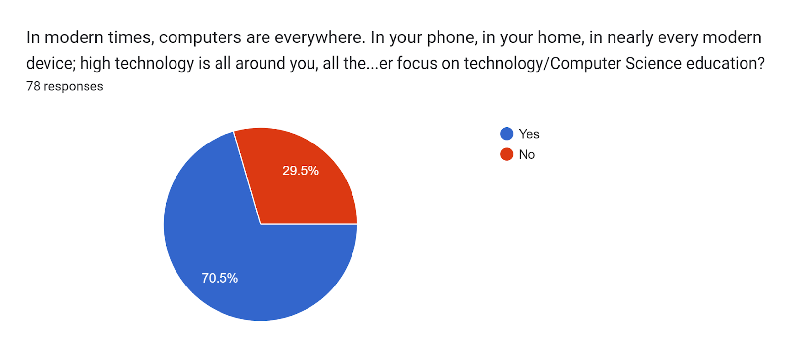
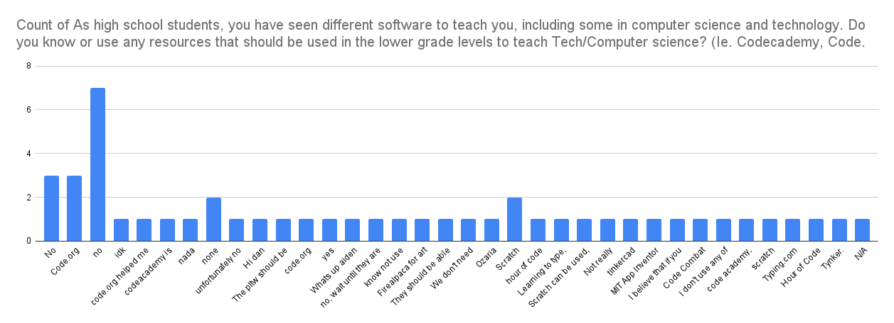

"
The Data of Question 4 shows a clear majority vote that technology needs an expanded focus with regards to new advancements in modern technology and its prevalence.
"
About half of the students did not answer this question, and of those who did, the most popular answer was a variation of "no". Among the remaining responses, popular responses were code.org and hour of code, as well as scratch, and other resources seen in the district's curriculum.